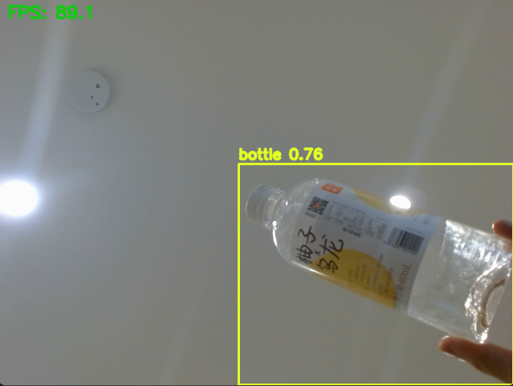
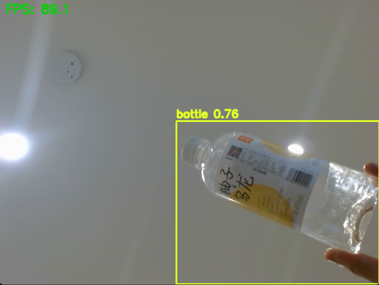

Project Overview
The Bottle Detection AI identifies bottles from live webcam footage or uploaded images. Trained on a custom dataset of plastic, glass, and metal bottles, it achieves high precision through YOLOv8 fine-tuning.
The model is exported to ONNX format and runs entirely client-side in the browser using ONNX Runtime Web, enabling real-time detection without backend servers.
The project demonstrates how deep learning models can be integrated into lightweight web experiences for sustainability applications such as recycling automation and waste sorting.
Tools Used
Python
YOLOv8
PyTorch
OpenCV
ONNX Runtime Web
JavaScript
HTML/CSS
Key Features
- 🧠 Real-time detection using YOLOv8 and webcam input
- 📦 Client-side inference — no backend required
- 🌐 Lightweight web integration built with vanilla JS
- 📊 Dataset training with data augmentation
Development Highlights
- - Trained YOLOv8 on 3,000+ labeled bottle images with augmentation.
- - Converted
best.ptmodel to ONNX for browser inference. - - Integrated ONNX Runtime Web for real-time object detection.
- - Added custom overlay drawing and class confidence display.